Verdict : la chaîne Claude Vision est largement viable
Tous les champs réglementaires HACCP (dénomination, fournisseur, n° agrément sanitaire, lot, DLC, poids net, T° conservation, origine) sont extraits correctement, y compris sur des étiquettes froissées (page 19), photographiées de travers, multilingues partiellement masquées (pages 22 / 25), ou avec petit texte (page 1).
L'extraction traite la rotation à 90° sans intervention (page 19 — étiquette tournée, lue normalement) et les encadrés barrés ou partiellement déchirés (page 22).
Doublons : 3 photos du même jambon Schwarzwaldhaus (pages 37, 40, 43) — signe que tu as photographié plusieurs unités du même produit. Le pipeline pourra signaler automatiquement les doublons par hash de lot + DLC + poids.
À noter : ce POC a été fait via lecture directe Claude (capacité native vision). Le pipeline cible (Edge Function + API Anthropic) produira strictement la même qualité, avec en plus un format JSON structuré et un coût d'environ 0,01 €/étiquette.
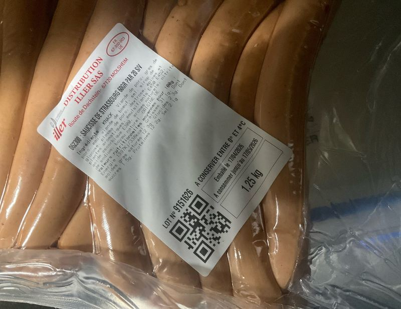
Knack Saucisse de Strasbourg
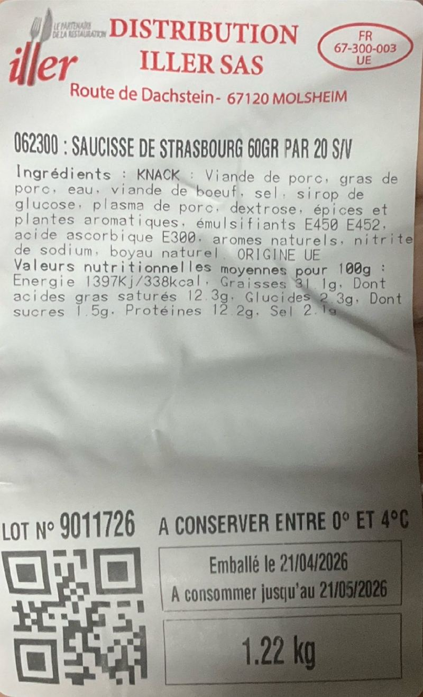
Knack Saucisse de Strasbourg (lot différent)
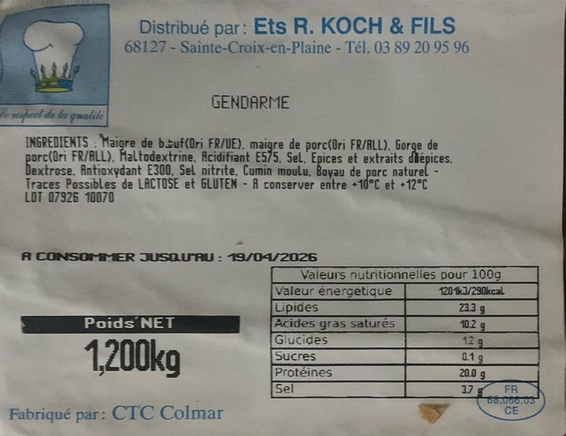
Gendarme Koch & Fils
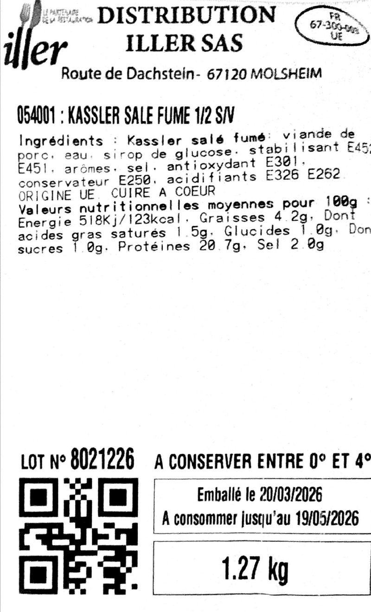
Kassler salé fumé
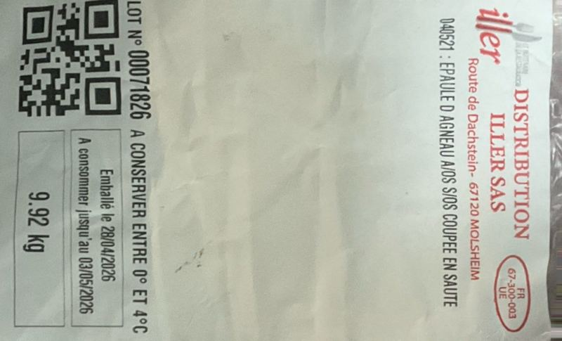
Épaule d'agneau A/OS — étiquette tournée à 90°
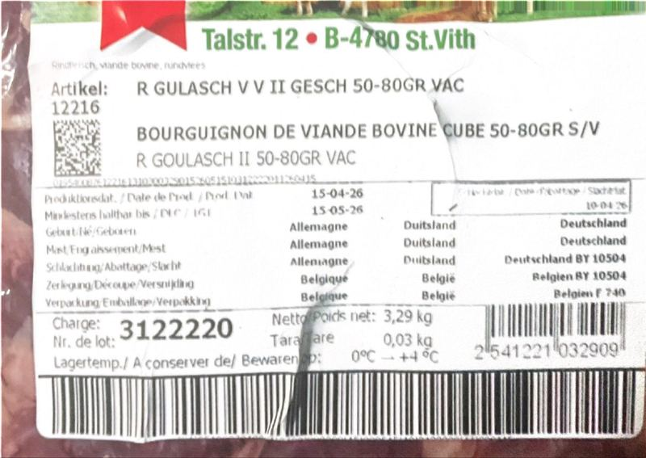
Bourguignon de viande bovine (étiquette multilingue déchirée)
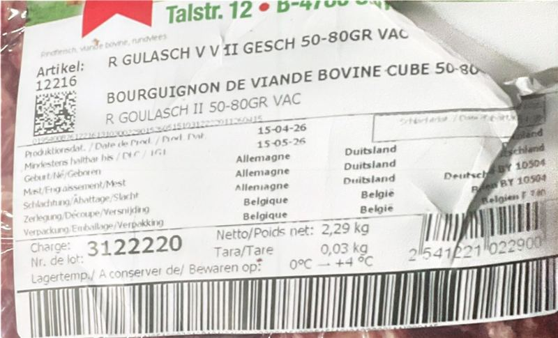
Bourguignon viande bovine (autre poids)
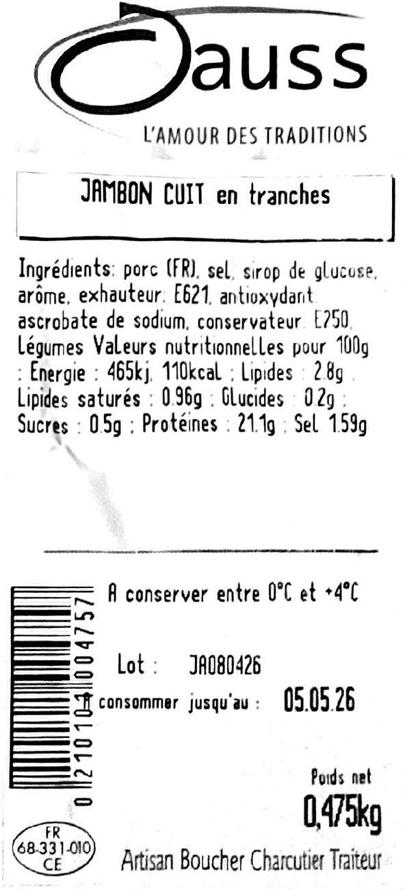
Jambon cuit en tranches Jauss
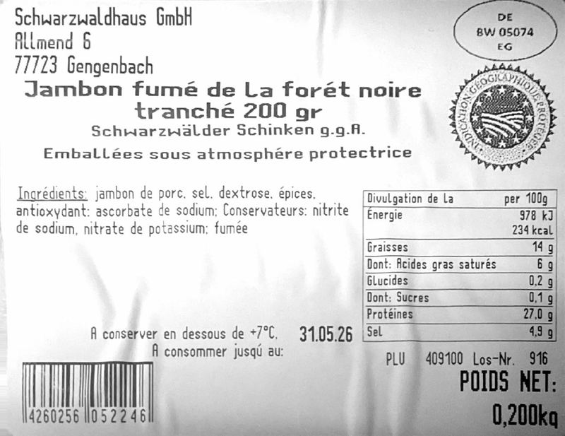
Jambon de la forêt noire (Schwarzwälder Schinken IGP)
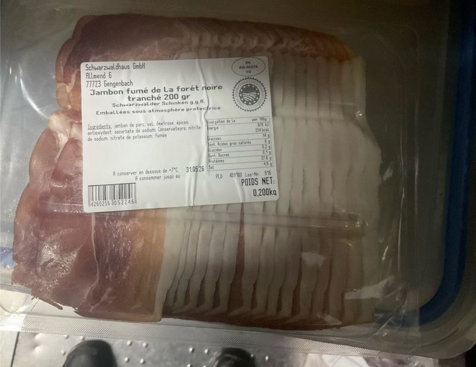
Jambon de la forêt noire (vue d'ensemble barquette)
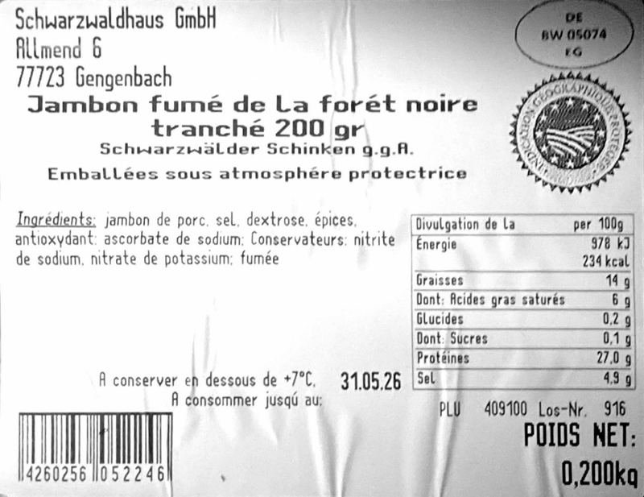
Jambon de la forêt noire (3e prise)
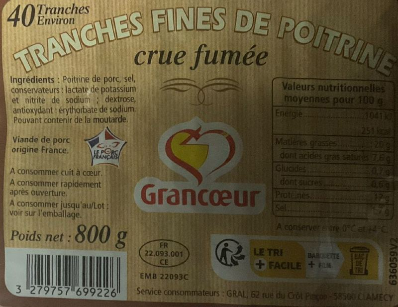
Tranches fines de poitrine crue fumée Grancœur
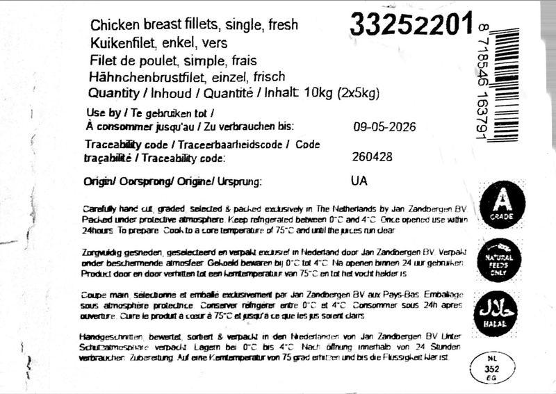
Filet de poulet frais Jan Zandbergen
Recommandation
Lancer la Phase 0 du module Scanner. Le test confirme que Claude Vision lit l'intégralité des étiquettes que l'on rencontre en chambre froide, y compris les cas pénibles (rotation, déchirures, multilingue, photos en biais).
Les seuls cas qui demanderont une intervention humaine sont ceux où l'information n'est physiquement pas sur la photo (page 49 : lot et DLC mentionnés "voir sur l'emballage" sur une autre face). Le pipeline signalera ces cas en demandant une seconde photo — au lieu d'enregistrer une fiche incomplète.
Bénéfices concrets attendus pour PLANB :
• Registre HACCP automatique (obligation 5 ans) consultable et exportable
• Recherche par DLC : alerte sur produits arrivant à péremption
• Recherche par lot : en cas de rappel fournisseur, identification immédiate des stocks concernés
• Coût : ~0,01 €/étiquette × 50 étiquettes/jour × 30 j = ~15 €/mois pour les 2 restaurants
Prochaine étape proposée : création du compte API Anthropic (~5 min, je t'accompagne), puis attaque de la Phase 0 (tables Supabase + bucket Storage + Edge Function de test) dans une prochaine session — environ 1 h de travail effectif.